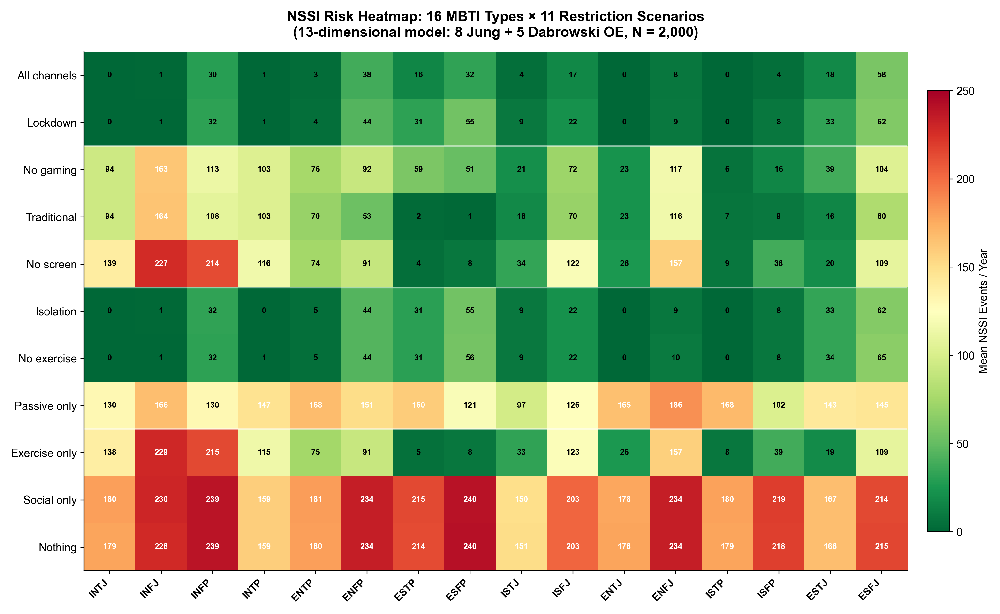

01 / PROFILE
Shape a learner
These are continuous tendencies, not personality labels.
02 / POLICY
EDUCATION OPERATIONS × DECISION SUPPORT
PolicyPilot turns the Pressure-Relief Model into an inspectable decision-support tool for school learning-support teams. Compare synthetic learner profiles under the same policy before rollout, then export the assumptions for a real team discussion.
01 / PROFILE
These are continuous tendencies, not personality labels.
02 / POLICY
LIVE OUTPUT
MODEL SUGGESTION
Run the model to see the lowest-friction next move.The recommendation is derived from channel capacity and activation energy for this profile.
COUNTERFACTUAL
The policy did not change. The available relief did.
MODEL RECEIPT
PolicyPilot is a planning aid, not a mental-health assessment or treatment recommender. Its value is making policy assumptions inspectable before a school applies them.
FROM CORA'S PRM RESEARCH

The underlying PRM simulation varies 13 continuous dimensions across 11 restriction scenarios. PolicyPilot turns that mechanism into a school operations workflow: a policy is a hypothesis to test, not a universal answer.
WHO IT IS FOR
Schools can use PolicyPilot to compare accommodation ideas before applying them to a real student. A paid school pilot would provide team workspaces, versioned policy receipts, and an auditable export for student-support meetings.